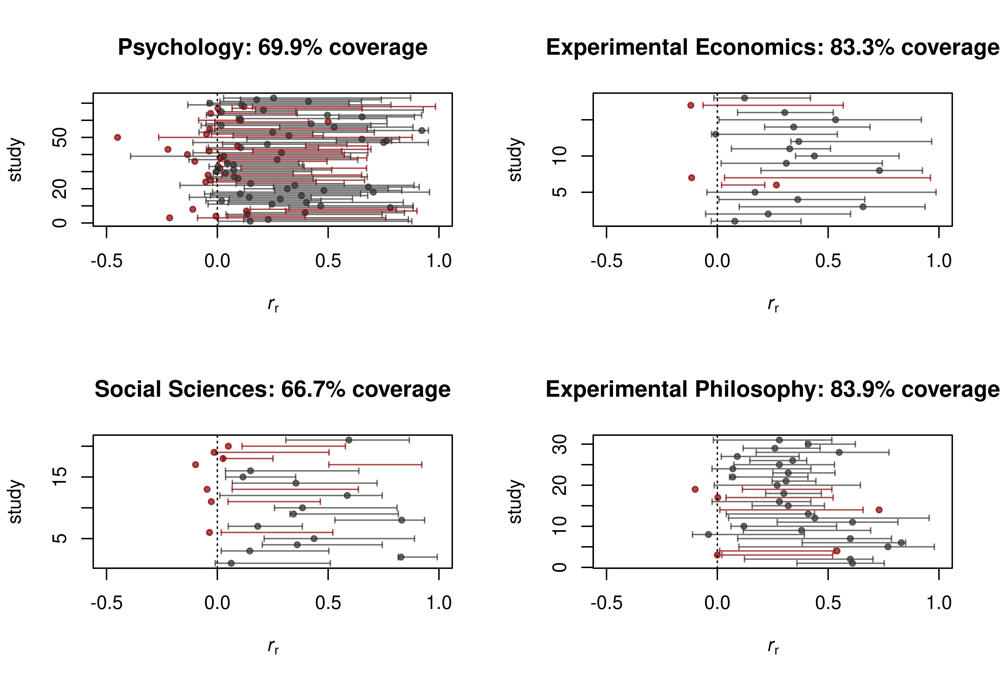
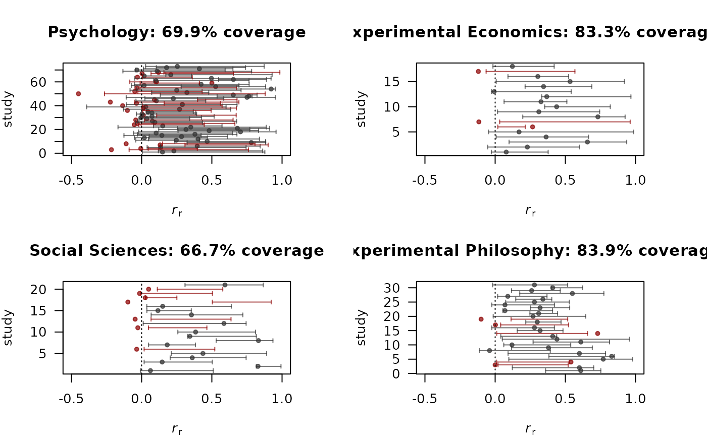

R/predictionInterval.R
predictionInterval.RdComputes a prediction interval for the effect estimate of the replication study.
predictionInterval( thetao, seo, ser, tau = 0, conf.level = 0.95, designPrior = "predictive" )
| thetao | Numeric vector of effect estimates from original studies. |
|---|---|
| seo | Numeric vector of standard errors of the original effect estimates. |
| ser | Numeric vector of standard errors of the replication effect estimates. |
| tau | Between-study heterogeneity standard error.
Default is |
| conf.level | The confidence level of the prediction intervals. Default is 0.95. |
| designPrior | Either "predictive" (default), "conditional", or "EB". If "EB", the contribution of the original study to the predictive distribution is shrunken towards zero based on the evidence in the original study (with empirical Bayes). |
A data frame with the following columns
Lower limit of prediction interval,
Mean of predictive distribution,
Upper limit of prediction interval.
This function computes a prediction interval and a mean estimate under a
specified predictive distribution of the replication effect estimate. Setting
designPrior = "conditional" is not recommended since this ignores the
uncertainty of the original effect estimate. See Patil, Peng, and Leek (2016)
and Pawel and Held (2020) for details.
predictionInterval is the vectorized version of .predictionInterval_.
Vectorize is used to vectorize the function.
Patil, P., Peng, R. D., Leek, J. T. (2016). What should researchers expect when they replicate studies? A statistical view of replicability in psychological science. Perspectives on Psychological Science, 11, 539-544. doi: 10.1177/1745691616646366
Pawel, S., Held, L. (2020). Probabilistic forecasting of replication studies. PLoS ONE. 15, e0231416. doi: 10.1371/journal.pone.0231416
Samuel Pawel
#> lower mean upper #> 1 -0.9257882 0.8333333 2.592455 #> 2 -0.4599640 1.5000000 3.459964 #> 3 2.6440396 4.8000000 6.955960# plot prediction intervals for different original effect estimates thetao <- c(2, 2.5, 3) pi_pred <- predictionInterval(thetao = thetao, seo = 1, ser = 1) pi_cond <- predictionInterval(thetao = thetao, seo = 1, ser = 1, designPrior = "conditional") pi_eb <- predictionInterval(thetao = thetao, seo = 1, ser = 1, designPrior = "EB") plot(thetao - 0.03, pi_pred$mean, xlim = c(1, 3.5), ylim = c(-2, 7), pch = 20, xaxt = "n", xlab = expression(hat(theta)[o]), ylab = expression(hat(theta)[r]), las = 2)arrows(thetao - 0.03, pi_pred$lower, thetao - 0.03, pi_pred$upper, length = 0.02, angle = 90, code = 3)arrows(thetao, pi_cond$lower, thetao, pi_cond$upper, length = 0.02, angle = 90, code = 3, col = "darkred")arrows(thetao + 0.03, pi_eb$lower, thetao + 0.03, pi_eb$upper, length = 0.02, angle = 90, code = 3, col = "darkblue")legend("topleft", c("predictive", "conditional", "EB"), title = "designPrior", pch = 20, col = c("black", "darkred", "darkblue"), bty = "n")# compute prediction intervals for replication projects data("RProjects", package = "ReplicationSuccess") parOld <- par(mfrow = c(2, 2)) for (p in unique(RProjects$project)) { data_project <- subset(RProjects, project == p) PI <- predictionInterval(thetao = data_project$fiso, seo = data_project$se_fiso, ser = data_project$se_fisr) PI <- tanh(PI) # transforming back to correlation scale within <- (data_project$rr < PI$upper) & (data_project$rr > PI$lower) coverage <- mean(within) color <- ifelse(within == TRUE, "#333333B3", "#8B0000B3") study <- seq(1, nrow(data_project)) plot(data_project$rr, study, col = color, pch = 20, xlim = c(-0.5, 1), xlab = expression(italic(r)[r]), main = paste0(p, ": ", round(coverage*100, 1), "% coverage")) arrows(PI$lower, study, PI$upper, study, length = 0.02, angle = 90, code = 3, col = color) abline(v = 0, lty = 3) }